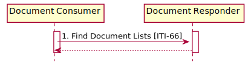

MHD Sushi Implementation Guide
0.1.0 - CI Build
MHD Sushi Implementation Guide
0.1.0 - CI Build
MHD Sushi Implementation Guide, published by IHE. This is not an authorized publication; it is the continuous build for version 0.1.0). This version is based on the current content of https://github.com/JohnMoehrke/MHD-fsh/ and changes regularly. See the Directory of published versions
This section corresponds to transaction [ITI-66] of the IHE Technical Framework. Transaction [ITI-66] is used by the Document Consumer and Document Responder Actors. This transaction is used to locate and return metadata for previously stored document submissions.
TODO: Fixup query parameters for List vs DocumentManifest
The Find Document Manifests [ITI-66] transaction is used to find DocumentManifest Resources that satisfy a set of parameters. It is equivalent to the FindSubmissionSets query in the Registry Stored Query [ITI-18] transaction, as documented in ITI TF-2a: 3.18.4.1.2.3.7.1. The result of the query is a Bundle containing DocumentManifest Resources that match the query parameters.
| Actor | Role |
|---|---|
| Document Consumer | Requests a list of DocumentManifest Resources, matching the supplied set of criteria, from the Document Responder |
| Document Responder | Returns DocumentManifest Resources that match the search criteria provided by the Document Consumer |
| Standard | Name |
|---|---|
| FHIR-R4 | HL7 FHIR Release 4.0 |

Figure: Find Document Lists Interactions
This message uses the HTTP GET method parameterized query to obtain List Resources from the Document Responder.
When the Document Consumer needs to discover List Resources matching various metadata parameters it issues a Find Document Lists message.
The Document Consumer executes an HTTP GET against the Document Responder’s List endpoint. The search target follows the FHIR HTTP specification, addressing the List Resource http://hl7.org/fhir/R4/http.html:
[base]/List?<query>
This URL is configurable by the Document Responder and is subject to the following constraints:
The
The Document Consumer may supply, and the Document Responder shall be capable of processing all query parameters listed below. All query parameter values shall be appropriately encoded per RFC3986 “percent” encoding rules. Note that percent encoding does restrict the character set to a subset of ASCII characters which is used for encoding all other characters used in the URL.
The Document Consumer shall include search parameter patient or patient.identifier, and status. The other parameters described below are optional. The Document Responder shall implement the parameters described below. The Document Responder may choose to support additional query parameters beyond the subset listed below. Any additional query parameters supported shall be supported according to the core FHIR specification. Such additional parameters are considered out of scope for this transaction. Any additional parameters not supported should be ignored. See http://hl7.org/fhir/R4/search.html#errors.
patient :This parameter is of type Reference(Patient). The Document Consumer may get this reference through the use of the PDQm or PIXm Profiles, or by some other method. When the patient parameter is used, the Patient reference would need to be accessible to both the Document Consumer and the Document Responder.
patient.identifier :This parameter, of type token, specifies an identifier associated with the patient to which the List Resource is assigned. See ITI TF-2x: Appendix Z.2.2 for use of the token data type for identifiers.
created :This parameter, of type date, specifies the time when the List was created. See FHIR http://hl7.org/fhir/R4/search.html#date for use of the date search type.
author.given and author.family :These parameters, of type string, specify the name parts of the author person which is associated with the List. See ITI TF-2x: Appendix Z.2.3 for use of the string data type.
identifier :This parameter, of type token, specifies an identifier for this List. The search results represent the results of a search on List.masterIdentifier and List.identifier. See ITI TF-2x: Appendix Z.2.2 for additional constraints on the use of the token search parameter type.
type :This parameter, of type token, specifies the type.coding value supplied in the List Resource. See ITI TF-2x: Appendix Z.2.2 for additional constraints on the use of the token search parameter type.
source :This parameter, of type uri, specifies the source value supplied in the List Resource. See FHIR http://hl7.org/fhir/R4/search.html#uri for use of the uri search type. status
This parameter, of type token, specifies the status of the List. If included in the query, the Document Consumer shall populate the code portion of the token with one of the codes in Table 3.66.4.1.2.1-1. The system portion of the token shall not be populated.
Table 3.66.4.1.2.1-1: Values for code for status of List
| Code | ebRIM Code |
| current | urn:oasis:names:tc:ebxml-regrep:StatusType:Approved |
| superseded | urn:oasis:names:tc:ebxml-regrep:StatusType:Deprecated |
The FHIR standard provides encodings for responses as either XML or JSON. The Document Responder shall support both message encodings, whilst the Document Consumer shall support one and may support both.
See ITI TF-2x: Appendix Z.6 for details.
The Document Responder shall process the query to discover the List entries that match the search parameters given.
The Document Responder is grouped with an XDS Document Consumer when it supports the “XDS on FHIR” Option. The Document Responder shall map the query parameters as listed in Table 3.66.4.1.3-1 and shall execute a Registry Stored Query [ITI-18] for FindSubmissionSets. No additional query parameters as defined in FHIR are required of the Document Responder.
Table 3.66.4.1.3-1: FindSubmissionSets Query Parameter Mapping
| ITI-66 Parameter Name | ITI-18 Parameter Name |
| patient or patient.identifier | $XDSSubmissionSetPatientId |
| created Note 1 | $XDSSubmissionSetSubmissionTimeFrom |
| created Note 2 | $XDSSubmissionSetSubmissionTimeTo |
| author.given / author.family | $XDSSubmissionSetAuthorPerson |
| type | $XDSSubmissionSetContentType |
| source | $XDSSubmissionSetSourceId |
| status | $XDSSubmissionSetStatus |
Note 1: This FindSubmissionSets parameter is used when the greater than parameter modifier is used on the created parameter.
Note 2: This FindSubmissionSets parameter is used when the less than parameter modifier is used on the created parameter.
Translation of Token Parameter
Query parameters of type token are used to represent codes and identifiers. See https://www.hl7.org/fhir/R4/search.html#token.
The manner in which the Document Responder translates these parameters to ebXML to support the Registry Stored Query [ITI-18] transaction will depend on the type of the corresponding parameter within the FindSubmissionSets stored query (see ITI TF-2a: 3.18.4.1.2.3.7.2).
<Value>('code^^system')</Value><Value>code^^^&system&ISO</Value>Translation of Name Components
Query parameters representing a name, for example author.given and author.family shall be translated to an appropriate XCN instance in the ebXML query. For example:
…&author.given=Marcus&author.family=Welby
would translate to:
<Value>^Welby^Marcus^^^</Value>
The Document Responder returns a HTTP Status code appropriate to the processing as well as a list of the matching document manifest resources.
The Document Responder completed processing of the Find Document Lists message.
Based on the query results, the Document Responder will either return an error or success. Guidance on handling Access Denied related to use of 200, 403 and 404 can be found in ITI TF-2x: Appendix Z.7.
When the Document Responder needs to report an error, it shall use HTTP error response codes and should include a FHIR OperationOutcome with more details on the failure. See FHIR http://hl7.org/fhir/R4/http.html and http://hl7.org/fhir/R4/operationoutcome.html.
If the Find Document Lists message is processed successfully, whether or not any List Resources are found, the HTTP status code shall be 200. The Find Document Lists Response message shall be a Bundle Resource containing zero or more List Resources. If the Document Responder is sending warnings, the Bundle Resource shall also contain an OperationOutcome Resource that contains those warnings.
The response shall adhere to the FHIR Bundle constraints specified in ITI TF-2x: Appendix Z.1.
List Resource Contents
The List Resources returned shall be compliant with the FHIR specification http://hl7.org/fhir/R4/List.html
The List Resources returned will be compliant with ITI TF-3: 4.5.1.2 for IHE restrictions on the List Resource and for a mapping of ebXML attributes to List elements. Document Consumers should be robust to receiving List Resources that are not IHE compliant.
If the Document Responder returns an HTTP redirect response (HTTP status codes 301, 302, 303, or 307), the Document Consumer shall follow the redirect, but may stop processing if it detects a loop. See RFC7231 Section 6.4 Redirection 3xx.
The Document Consumer shall process the results according to application-defined rules. The Document Consumer should be robust as the response may contain List Resources that match the query parameters but are not compliant with the List constraints defined in ITI TF-3: 4.5.
Document Responders implementing this transaction shall provide a CapabilityStatement Resource as described in ITI TF-2x: Appendix Z.3 indicating the transaction has been implemented.
See MHD Security Considerations
This transaction should not return information that the Document Consumer is not authorized to access. Where authorization here is inclusive of system, app, and user according to local policy, patient consents, and security layering. However, the transaction may return List resources that have Reference elements that the Document Consumer may not have access to. This is to say that the authorization need only be to the content returned in the Bundle. There may be references (URLs) for which the content is not authorized. This is considered proper as the Document Consumer would need to retrieve the content pointed to by those references, and at that time the proper authorization decision would be made on that context and content. In this way it is possible for a Document Consumer to get List Resources that are pointing at data that the Document Consumer is not authorized to retrieve. Thus, the URLs used must be carefully crafted so as to not expose sensitive data in the URL value.
The security audit criteria are similar to those for the Registry Stored Query [ITI-18] transaction. Grouping a Document Consumer or Document Responder with an ATNA Secure Node or Secure Application is recommended, but not mandated.
The Document Consumer when grouped with ATNA Secure Node or Secure Application actor shall be able to record a Find Document Lists Consumer Audit Event Log. Audit Example for a Find Document Lists transaction from consumer perspective
The Document Responder when grouped with ATNA Secure Node or Secure Application actor shall be able to record a Find Document Lists Responder Audit Event Log. Audit Example for a Find Documet Lists Transaction from responder perspective
IG © 2020+ IHE. Package IHE.ITI.MHD#0.1.0 based on FHIR 4.0.1. Generated 2020-05-03
Links: Table of Contents |
QA Report |
Version History  |
|
 |
Propose a change
|
Propose a change